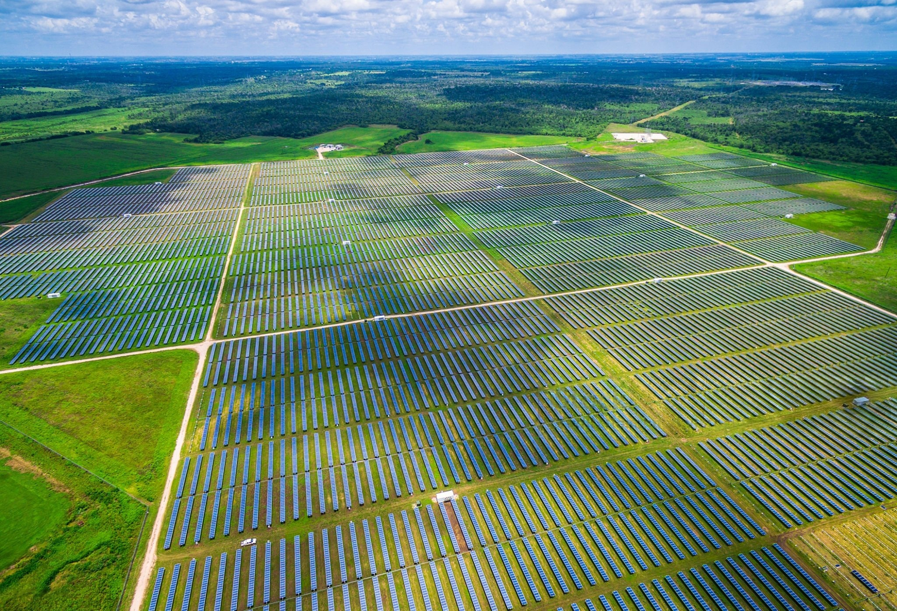
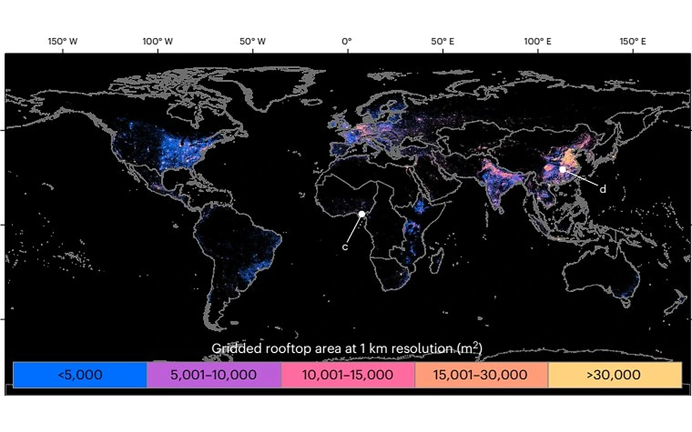
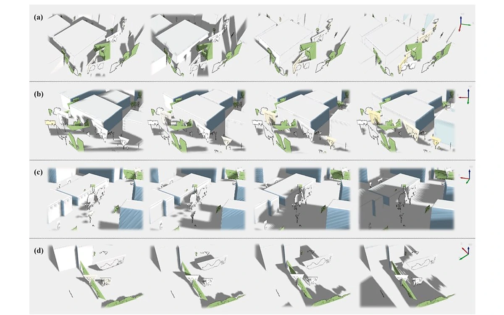
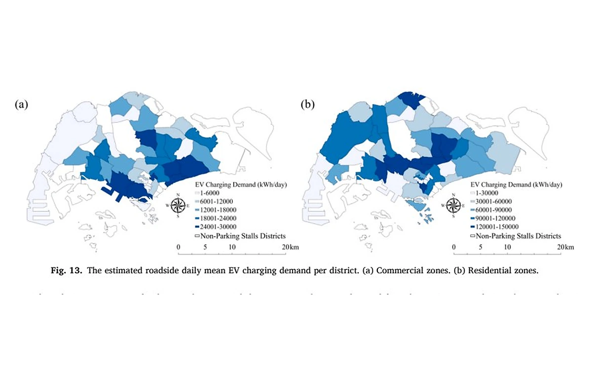
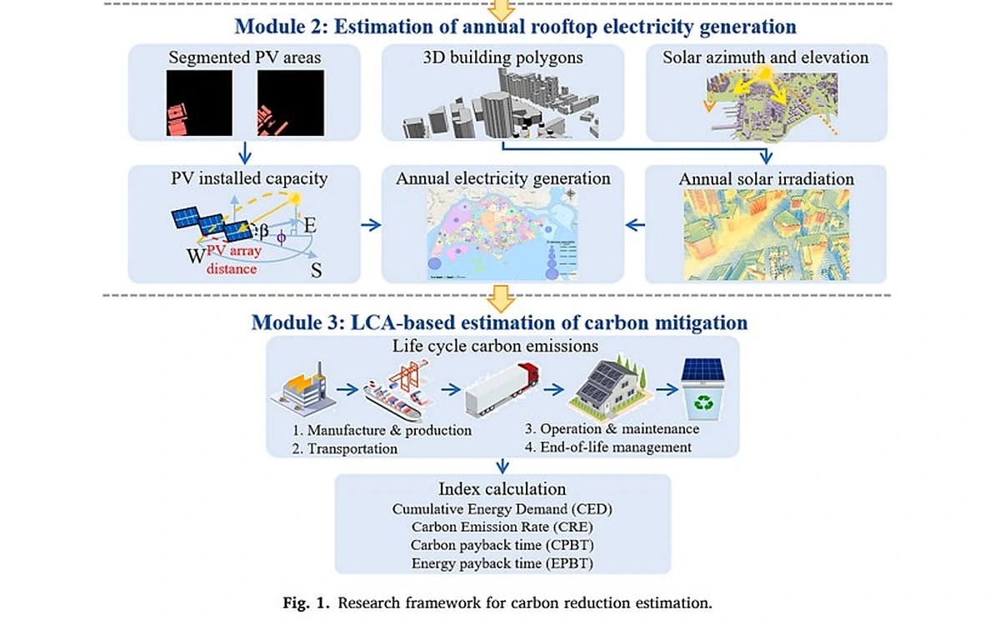
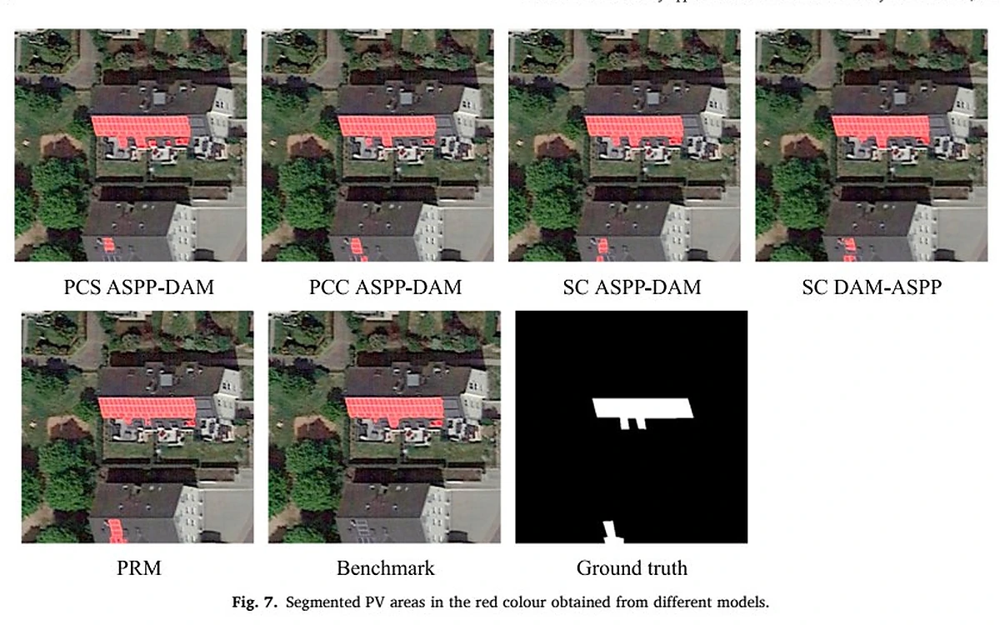
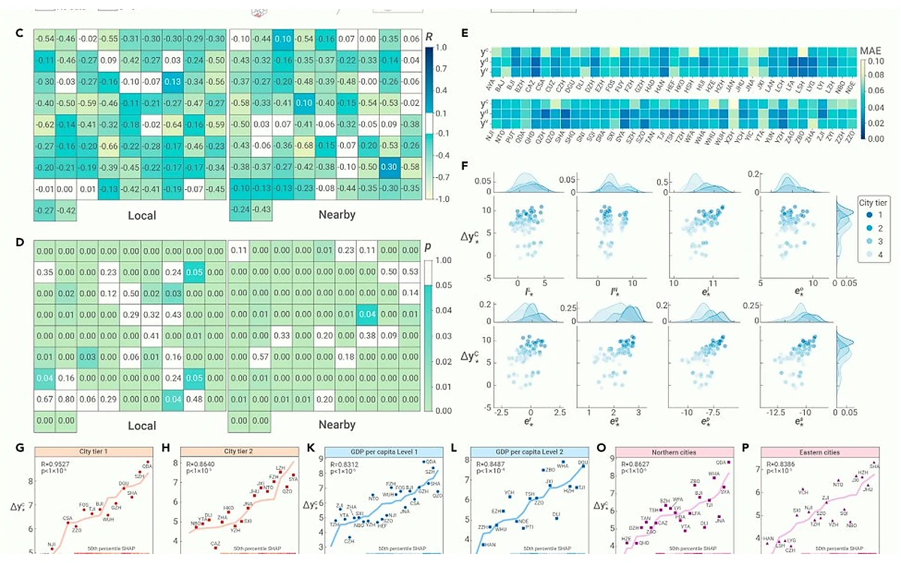

Rui Zhu
Professor
School of Geography
Nanjing Normal University

Climate Change and Energy Transition Research Centre
Energy geography for climate resilience and energy transition
About the CentreEnergy transition is a key pathway for addressing climate change and advancing low-carbon development. Around the world, energy systems are undergoing profound transformation, as renewable energy, power systems, and urban mobility continue to reshape the spatial organization of energy. As a central link between human activities and the climate system, energy requires interdisciplinary research to understand its transition pathways, system security, and climate adaptability. The Climate Change and Energy Transition Research Centre (CCETRC) adopts an integrated geographical perspective, viewing energy as a key element shaping human-environment interactions. Building on Nanjing Normal University's strengths in geography, CCETRC will develop Energy Geography as a distinctive research direction, focusing on energy spatial patterns, transition pathways, climate resilience, and collaborative governance to provide scientific evidence and decision support for modern energy systems.
CCETRC is positioned at the international frontier of climate change and energy transition research, aiming to become an influential interdisciplinary platform for energy geography and climate-environment studies. Taking energy as a geographical element as its core concept, CCETRC will develop theoretical and methodological frameworks for energy geography, advance methods for energy system modelling, transition pathway optimization, and risk assessment, and build decision-support capacity for energy transition and climate adaptation. It will bring together interdisciplinary research teams, cultivate talent with global perspectives and cross-domain expertise, promote the development of energy geography, and support the transformation of future energy systems.
Investigating the spatiotemporal heterogeneity and evolution of energy systems, together with their two-way interactions with the climate system.
Explore resourceExamining how energy transition reshapes regional development, spatial justice, geopolitical strategy and energy-supply security.
Explore resourceDeveloping spatiotemporal modelling, simulation and optimization methods for integrated energy production, transmission, storage and consumption.
Explore resourceSupporting multi-objective transition pathways, infrastructure climate-risk assessment and integrated decision-support applications.
Explore resource
Nature Sustainability, 2026: rooftop photovoltaic-powered electric-vehicle charging across 40 global cities for accelerated decarbonization.

Building and Environment, 2025: deep-learning-augmented geospatial analysis of urban sunlight and shading from street-view imagery.

Applied Energy, 2025: city-scale roadside electric-vehicle parking and charging capacity estimated from street-view imagery and GIS.

Applied Energy, 2024: multi-sourced geospatial modelling of rooftop photovoltaic generation and life-cycle carbon mitigation potential.

International Journal of Applied Earth Observation and Geoinformation, 2023: deep-learning refinement of photovoltaic-area segmentation from satellite imagery.

The Innovation, 2024: cross-city analysis of adaptive changes in electric-vehicle charging behaviour throughout the post-pandemic era.
Professor
School of Geography
Nanjing Normal University
Associate Professor
School of Internet of Things, Nanjing University of Posts and Telecommunications
Lecturer
School of Geography
Nanjing Normal University
Lecturer
School of Geography
Nanjing Normal University
PhD Student
School of Geography
Nanjing Normal University
Research Assistant
School of Geography
Nanjing Normal University
Graduate Student
School of Geography
Nanjing Normal University
Graduate Student
School of Geography
Nanjing Normal University
Graduate Student
School of Geography
Nanjing Normal University
Connect with CCETRC and follow our latest research updates.
Proposed under the State Key Laboratory of Climate System Prediction and Risk Management (Nanjing Normal University)
Address, centre email and telephone: TBD
CCETRC brings together research in energy, remote sensing, geoinformatics, environment and climate. We welcome motivated researchers and students who share our commitment to ambitious, interdisciplinary science.
We seek candidates with a strong foundation in energy, remote sensing, geographic information science, environmental science, climate science or related fields. Applicants should have experience publishing at leading conferences or in high-quality journals, together with ambitious research goals and strong intrinsic motivation.